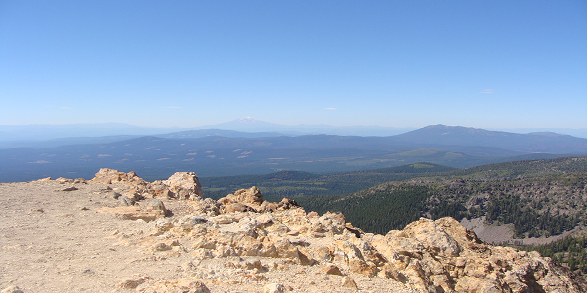

Lassen volcanic National Park
Lassen Volcanic National Park is one the getaways in Northern Califonia. Lassen offers quite a large number of hiking trails with different levels of difficulty. I had hiked a couple of times before I visited Lassen (9 miles roundtrip trail) so I enjoyed walking along the nature to some of the amazing views. Lassen also has unique geological features. That is there are a lot of hydrothermal areas in Lassen. One such place is 'Devil's Kitchen'. As the name suggests this entire place looks like a couldron, as if some huge creature is cooking something in it! It is very important to be very careful around such areas, especially if you are travelling with kids. Always stay on trail.
some of the trails include, Manzanita Lake, devastated area, Kings Creek Falls, Bumpass Hell, Paradise Meadow, Mill Creek Falls, Ridge Lakes, Terrace, Shadow and Cliff Lakes. When you are the park's visitor center, ask for visitor guide. It includes the information on how strenuous each trail is, so you can pick what is right for you. Overall this is an amazing place for everyone.